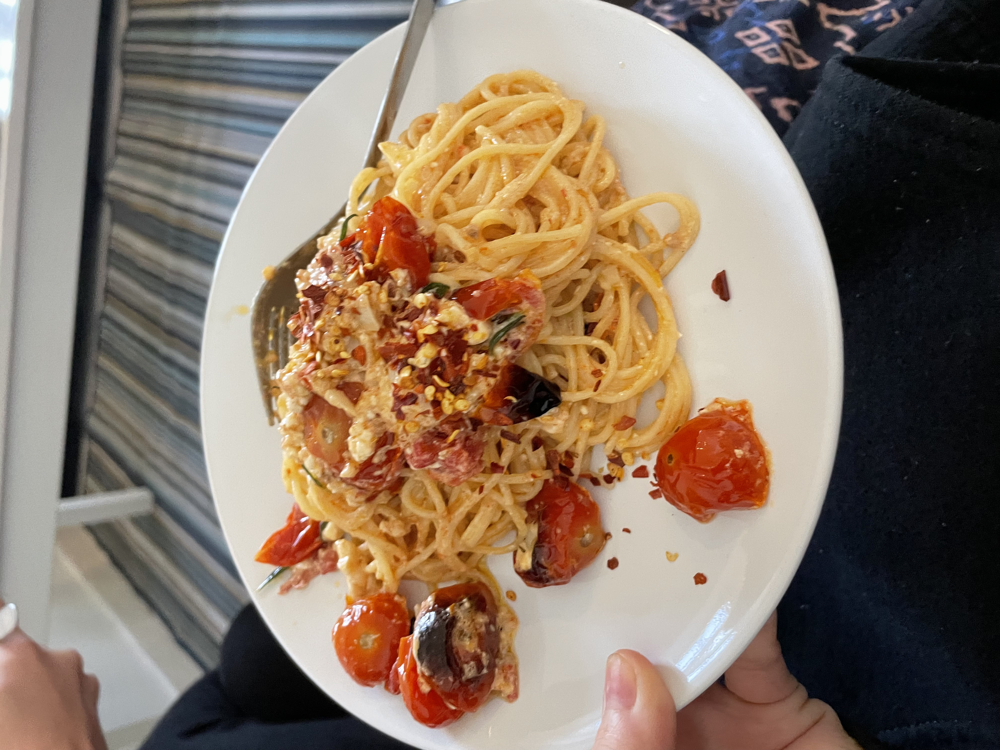
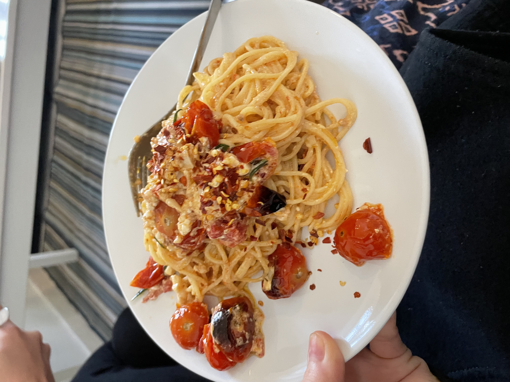

Feta Cheese Pasta
Ingredients for Two Servings
- 200 grams of feta cheese, cut in half
- 250 grams of cherry tomatoes
- olive oil
- 5 cloves of garlic
- handful of fresh basil
- salt and pepper
- two servings of linguine
- chilli flakes
Steps
- Preheat the oven at 200 degree celsius.
- Cut all the tomatoes in half and put them in a baking tray, add some salt, pepper, as much as olive oil as you want, and mix them through.
- Cut the feta cheese in half and lay them in the middle of the tray, then add some olive oil on top of it.
- Put the tray in oven for 30 minutes.
- Set the oven to 225 degree celsius and bake for another 15 minutes. Meanwhile, finely chop the garlic and boil the pasta.
- Take out the tray and mix in garlic, pasta, basil.
- Add the chilli flakes and serve.
 
